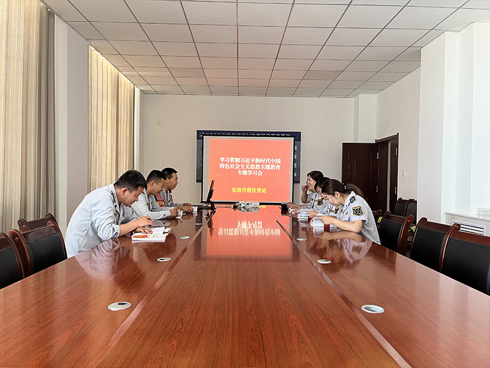
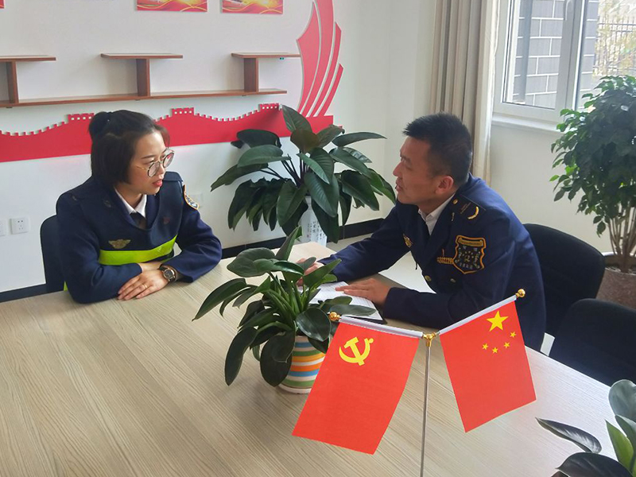
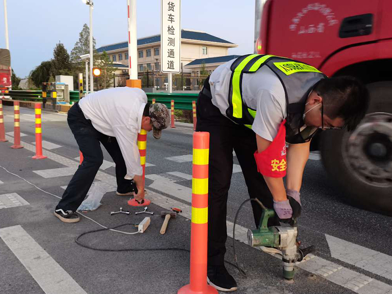
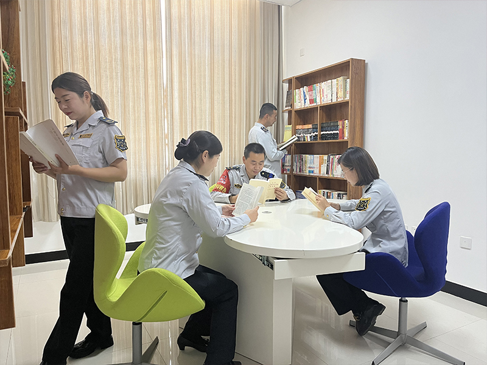
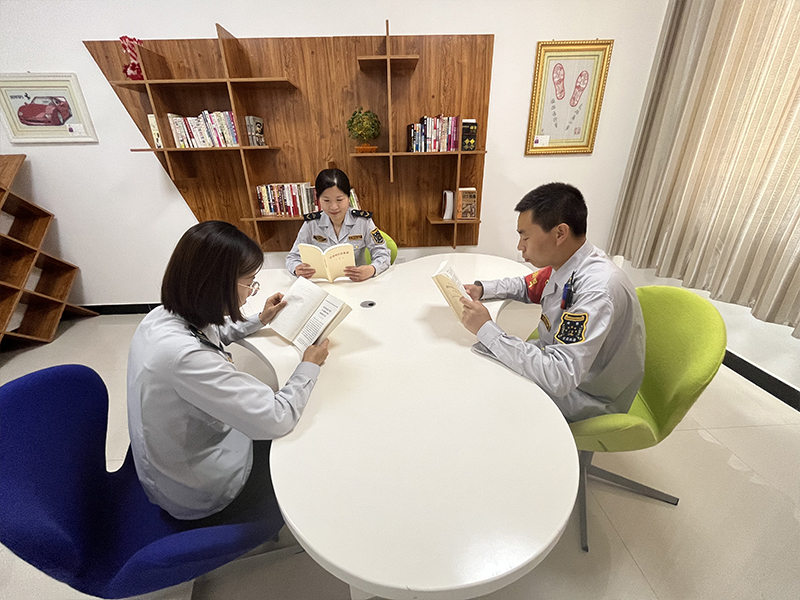
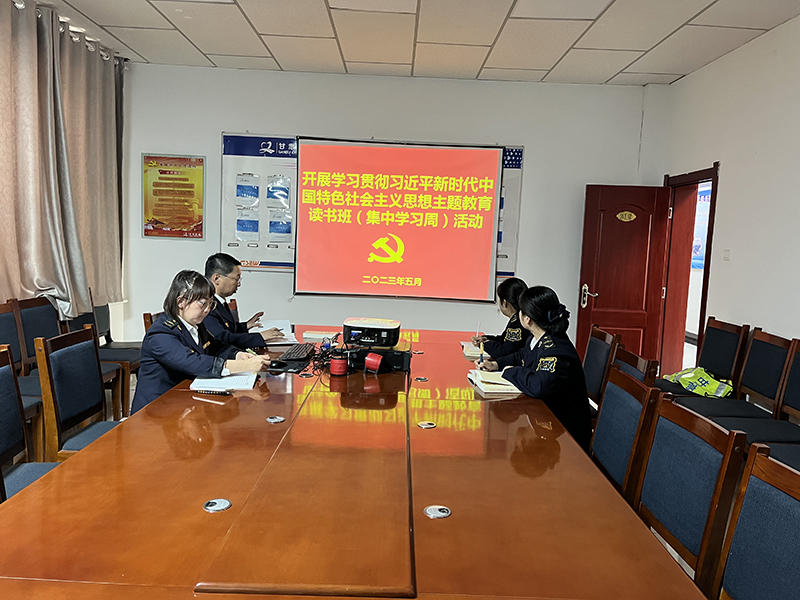

主题教育润“心”细无声
为深入学习贯彻习近平新时代中国特色社会主义思想主题教育，进一步提升党员身份意识和责任意识，山临所大力开展党员“亮身份、表承诺、树形象、做表率”活动，引导激励广大党员“亮”出身份，关键时刻“站”出来，服务形象“树”起来，用实际行动展现“主题教育”成果。
亮出党员身份 争先锋 做表率 以点带面
走进山临收费所无论是办公区域、还是车道保畅一线，一块块印有鲜红党旗的“党员先锋岗”和“党员责任区”牌板格外引人注目。今年以来，所党支部结合收费运营实际，将各党小组党建与收费运营工作深度融合，在办公室、车道票亭地点设立“党员先锋岗”“党员责任区”，不断强化党员在党意识，使党员身份“亮”出来、党性意识“唤”起来、先锋形象“树”起来，进一步带领收费一线班组立足本职、苦练技能、争先创优，不断创造服务价值，提升服务本领。
“党员示范岗和党员责任区的创建，就是要把党员的先进性岗位化、职责化，把先锋承诺‘提出来’，岗位职责‘亮出来’，用实际行动践行全心全意为人民群众便利出行服务，用实际行动诠释‘一党员一盏灯’、‘一党员一阵地’‘一支部一面旗’的模范引领作用。”山临所党支部书记郑忠介绍。
所党支部持续深化党员为职工办实事，定期收集职工意见建议、解决职工实际困难、化解职工矛盾纠纷，通过与职工面对面沟通、心贴心交流，摸排统计职工家庭情况，把职工的“心愿清单”变成“幸福账单”，进一步凝聚党员为职工办实事的强大合力。
做出党员承诺 查安全 保畅通 争做标杆
在上岗班前会上，党员带头宣誓：“人物双防、车道安全靠自己！严守规矩，应征不漏，应免不收，用心服务司乘，确保车道畅通……”
在上岗班前会上，党员带头宣誓：“人物双防、车道安全靠自己！严守规矩，应征不漏，应免不收，用心服务司乘，确保车道畅通……”
山临所坚持“关键少数”带动“绝大多数”，设立党员安全示范岗，签订安全承诺书，公开接受职工监督，引导广大党员自觉做安全工作的“监督员”。通过创建党员安全责任区，定期组织党员开展收费车道现场安全隐患自查活动，以党员带全员，常查安全隐患，常纠违章行为，有效杜绝各类安全生产事故的发生，夯实车道安全生产根基。不断强化班组安全管理，实行网格化管理模式，对区域划片包干，构建起个人、责任区、班组三级巡查制度，组织班组党员、职工“一对一”结对子，相互对责任区车道机电设备运行、指挥棒、肩闪、对讲机、正规操作等情况进行交叉互检，对互检发现的安全隐患，进行及时整改，进一步提高收费运营安全管理水平。
树起党员形象 肩扛担 我先干 牢记使命
“火车跑得快，全靠车头带。集体强不强，全靠领头羊。” 山临所践行“收费运营出题、党建工作破题”的工作思路，围绕收费运营工作中的“舒心、畅通、追缴、免费”等工作核心，常态化开展技术比武、业务竞赛等活动，结合工作难题开展党员创新攻关，亮出党员形象，强化党员实战锻炼，确保广大党员个个成为独当一面的“行家里手”。
巩固深化党的二十大精神学习教育成效，党员带头引领职工开展学习习近平新时代中国特色社会主义思想主题教育热潮，带头重温红色党史，带头诵读红色书籍，进一步强思想、聚人心、促发展，让每一名职工在工作岗位上将党的政策深度融合到日常工作中，认真践行新时代党的建设总要求，切实把党的政治优势、组织优势转化为高质量发展的优势，发扬自我革命精神，为高速公路运营事业发展提供坚强保证。
聚焦人民群众出行便利需要、对准现实工作中诉求的问题ETC办理、绿色通道减免、差异化收费、车道保畅、特殊天气便民服务、应急救援、延伸服务导游路线指引等，全所党员争当标兵、勇做先锋，让党旗在运营收费各个“阵地”高高飘扬，充分发挥党员的先锋模范作用，积极践行亮身份、表承诺、树形象、做表率行动，叫响“我先上”“跟我上”，擦亮了共产党员这块“金字招牌”。
访问量:次
著作权归盛发东所有,转载或内容合作请联系作者。©网内版权号：